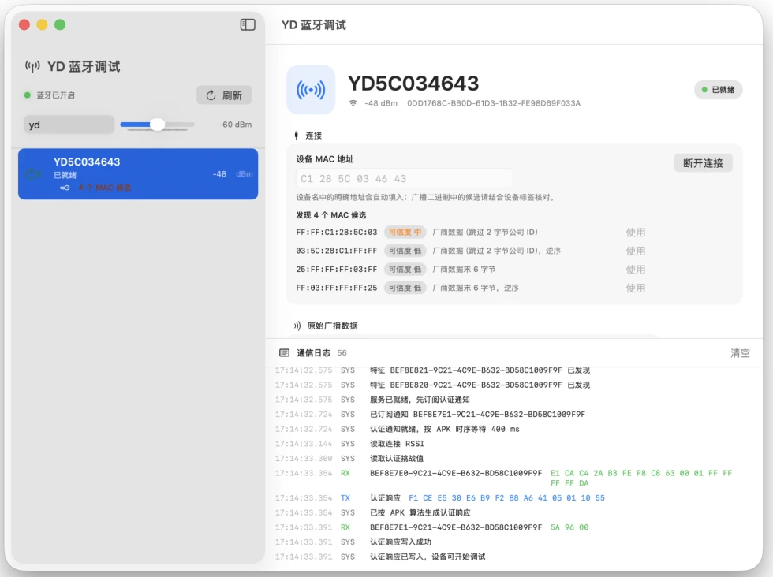

广播识别
自动发现候选 MAC
结合设备名称与厂商数据，优先填入高可信地址，也保留手动核对入口。
02:7A:4C:90:31:B8
工具先确认车辆广播信息和 MAC 地址，再完成 GATT 认证，最后向控制器发送动力锁定指令。
扫描附近 YD 设备，从广播数据识别目标车辆。
建立蓝牙连接，发现服务并完成控制器认证。
认证成功后发送控制指令，让兼容车辆解除动力锁定。
这里解除的是授权车辆的动力锁定。它不绕过防盗系统，也不替代车辆钥匙。
从扫描、认证到写入和通知，关键状态都留在界面与日志中，问题定位更直接。

不隐藏协议细节，也不让常用操作被参数淹没。
广播识别
结合设备名称与厂商数据，优先填入高可信地址，也保留手动核对入口。
02:7A:4C:90:31:B8
设备认证
连接状态与认证阶段清楚可见，避免在链路未就绪时盲目写入。
车辆控制
常用动作直接触达，自定义 HEX 保留给需要精确控制的场景。
通信日志
服务发现、特征订阅、写入结果和设备通知按时间记录。
59 44 3E 31 ... 4B 4A
原生 macOS
一个 Universal 2 安装包，支持 macOS 13 及更高版本。
下载应用，连接属于你或已获得授权的雅迪电动车。